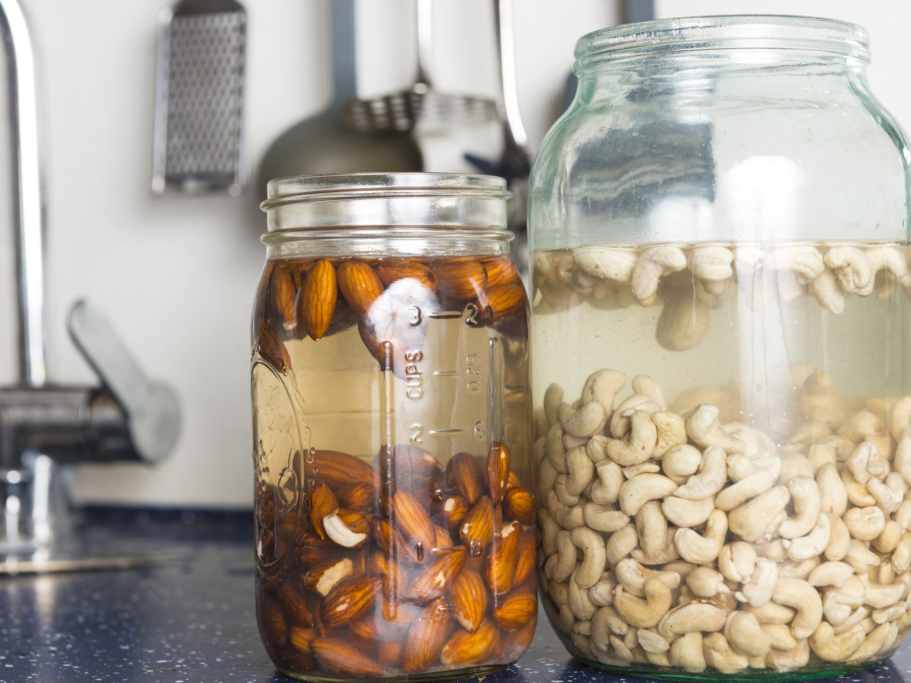
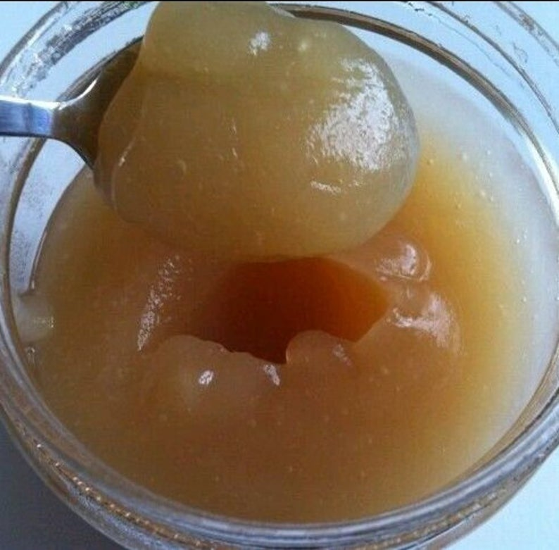
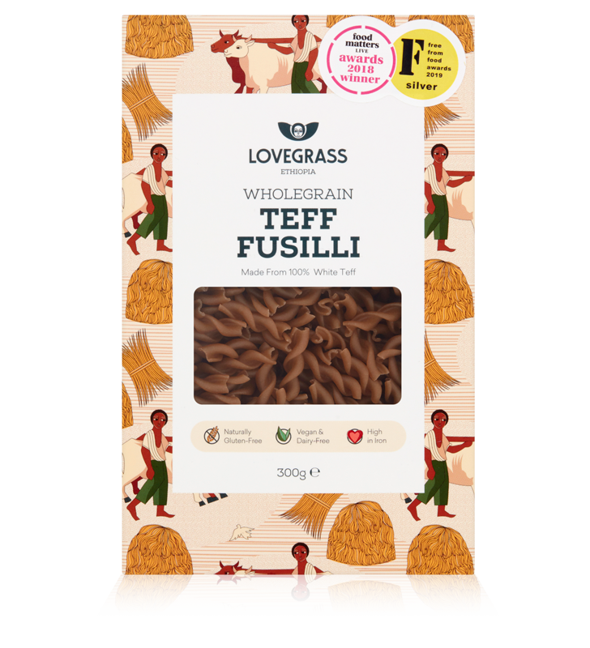

Did you know that most seeds/legumes contain phytic acid? Phytic acid inhibits the absorption of non-heme iron. OK was that a bit too much information, lets start from the beginning in more detail. There are two types of iron: non-heme iron and heme iron. Heme iron is found in animals and is more easily absorbed in the body whilst none heme-iron is found in plant alternatives. But even though heme iron is more easily absorbed, did you know that high heme intake has been linked to an increased risk of several cancers. This is why balance is vital when concerning your health. Now non-heme iron is harder to absorb due to phytic acids but methods such as soaking, sprouting and fermentation techniques can break up those anti-nutrients so you can absorb as much nutrition as possible. As well as pairing plant-based alternatives with high vitamin c foods can further help in the absorption process. so now for the biggest question, how do I soak my legumes? Now, this is pretty self-explanatory, I like to pour my seeds into a sealed container and fill it to the brim with spring water and then I proceed to allow them to soak overnight. It is also important to research your legumes/seeds/nut so you can allocate appropriate soaking times to each. For instance a general rule for nuts, is the harder the nut, the longer the soaking time. This means walnut would take up to 4-8 hours to soak whilst almonds, pistachios, and hazelnuts would require more time.
First of all sea moss contains 92 out of 102 minerals inside your body! sea moss has high levels of iodine which a lot of individuals tend to be deficient in and is packed with magnesium and potassium, which work to improve your emotional well-being. It also contains small amounts of selenium, phosphorus, zinc, manganese, and vitamins A, E, C, G, K, and a host of others that are vital for our daily survival. This means most people could just about live off sea moss. When we give our body it's needed cell food, our body can reverse and even stop many diseases. Furthermore, because it vitamin pack it will also nourish your skin and many people use sea moss as a mask to soothe their skin, which can be highly beneficial in cases such as eczema, psoriasis, dermatitis, and burns. Lastly, Now sea moss is very high in iodine so do take with caution, if you are subjected to thyroid problems this could make it worst so just always consult your doctor when prescribing to any supplement!
Amaranth seed porridge sweetened with date sugar and cinnamon roasted apple slices on top This is one my favourite breakfast meals to have because it contains an abundance amount of nutrients such as the essential amino acid lysine, which is hard to source in a plant-base diet, and gives me the feeling of being a full, which really helps with weight loss. It's also so easy to make and you add your favourite milk (mine is hemp) , just to thicken it up a bit. I also love to add super fruits like berries just to sweeten it up further since it best to have fruits in the morning. You could also add some of your daily sea moss as well, just to get further essential minerals.
So one of the most exciting things about an alkaline diet is getting your hands on the most ancient grains. Now, not a lot of people know about the Teff grain but it originated in Ethiopia and has been used for thousands of years. Now I'm still perplexed on why this grain is not that big yet, its virtually tasteless and best mimics both the description and taste of pasta without the nasties. Yep you wont believe it; teff pasta is gluten-free, which will make it a favourite among individuals with celiac disease or just in general for better food digestion. Now let's go in more detail for the benefits of teff pasta below; Teff is high in prebiotic fibre which stimulates the growth of good gut bacteria. now, this is a key benefit for IBS sufferers as many have claimed for its relieving benefits in cramping, constipation and other gastrointestinal issues. Moreover, with a high resistant starch, which is a carbohydrate that takes long to digest , it can assist in weight, benefit heart health and improve both blood sugar control and insulin sensitivity. Even though Teff is the smallest grain- It is a nutritional giant. It has twice the fibre of brown rice. More iron than buckwheat, chia, and it has fives the iron of Wheat. Teff leads with three times the levels of calcium found in quinoa, five times in whole wheat and 8 times that of brown rice. It is also the only grain known to contain significant amounts of vitamin C. Wow that was a mouthful, the bottom line is you need to get your hands on some Teff.
